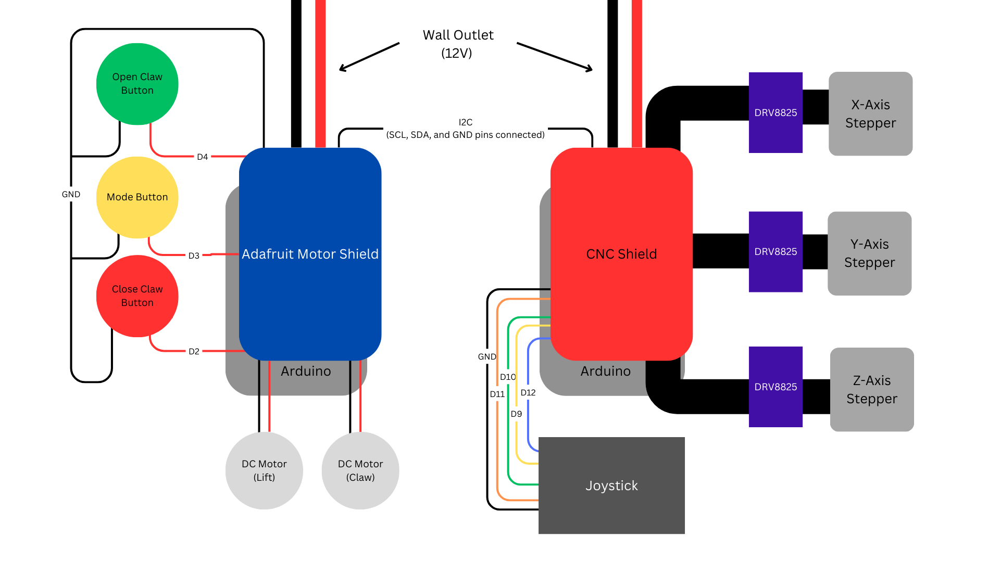
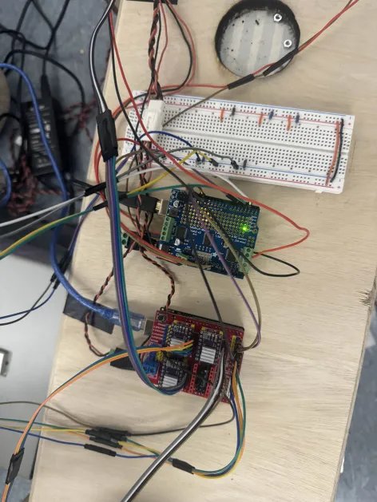

Electrical Design Analysis
Electrical System Diagram
Our electrical system has two Arduinos in it. One Arduino is equipped with an Adafruit Motor Shield and the other is equipped with a CNC Shield. Each Arduino is in charge of different mechanical systems and receives different user inputs. The Adafruit Motor Shield Arduino controls the lift and claw motors and directly receives input from the buttons. The CNC Shield Arduino controls the gantry stepper motors and directly receives input from the joystick. The reason we needed to use two separate Arduinos and shields is because of the stepper motors. The Adafruit Motor Shield did not have enough ports to control three stepper motors plus two DC motors. Additionally, the stepper motors require a much higher current than the Adafruit Motor Shield can supply.
Because of the split Arduino design, there was concern potential delays/slowness of the transmission of live data, specifically from the joystick. This is the reason why the joystick is connected to the CNC Shield Arduino. The buttons were then connected to the Adafruit Motor Shield Arduino as two of them controlled the claw and the CNC Shield did not have enough digital pins to support the joystick and the buttons.
The two Arduinos communicate with each other through I2C. Their SCL, SDA, and GND pins are connected to each other to enable this. For our use, we use I2C to transmit numbers between the Arduinos as signals. We will elaborate more on this in the Firmware section.
Below is an image of the actual electrical system.
